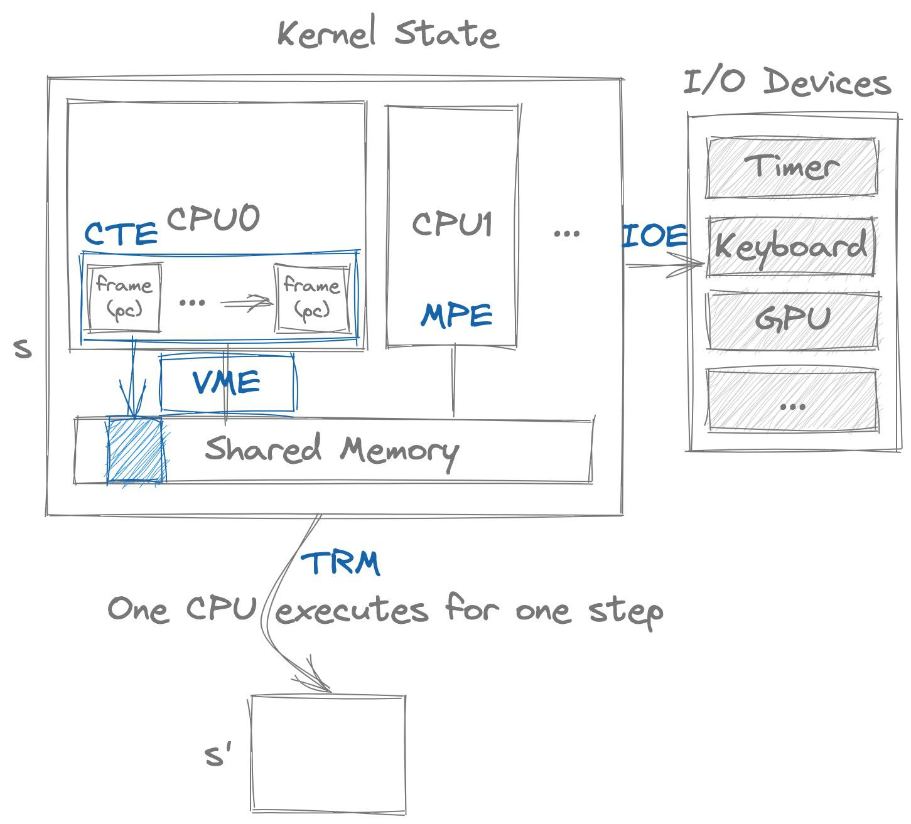

AbstractMachine 设计概述
AbstractMachine 的设计目标是能 “容易地” 实现各类系统软件 (直接需求是实现操作系统)。一个好的机制不仅应当足够简单、健壮，还应该能高效地支持各种策略的实现。然而世界并不是绝对完美的：支持全面的抽象层不可避免会相对庞大；而精简的抽象层则可能无法实现某些策略，或是性能较低。AbstractMachine (指令集体系结构和操作系统之间的抽象层) 作为 “给同学们设计的第一个系统”，我们所做的取舍是使它尽可能 “容易被理解”，不惜在某些时候过度简化或损失性能。
1. 实现 “计算机软件栈” 面临的困难
“写一个操作系统” 对于计算机专业的同学们来说无疑是一件听起来很酷的事——当然，这种新鲜感很大程度来源于各种关于 “操作系统” 的传说，比如要懂汇编和系统指令、很复杂……但这些其实都是对操作系统的谣传——“操作系统不过就是一个 C 程序”。
学过《计算机系统基础》的同学也许会心一笑，但大家多多少少对这句话还是感到有些 “心虚”。硬件和软件之间有一些达成默契的约定：有些存储器 (ROM) 能直接以内存映射的方式被处理器访问；因此 CPU Reset 之后，只要将 PC 指针设置成某个固定的位置即可。ROM 中的代码 (firmware，厂商编写) 会加载存储设备上的程序，准备好 “C 程序的运行环境”，并跳转到 main 函数执行。
但此时，处理器比 RESET 后的 “原始” 状态并没有好多少。在执行《操作系统》教科书上描述的那些事情 (例如创建第一个进程) 之前，还有海量的初始化工作等着你：GDT, APIC, IDT, TSS, 初始页表……不同体系结构大同小异，你会看到很多奇怪对系统寄存器的设置，而搞懂它们的唯一方式就是 RTFM。
因此很多同学阅读网上教程 (和 XXX 自制操作系统书) 的时候，复杂的概念层出不穷，弄了半天才打印个 Hello World。这一困难的直接原因是大家对硬件的规约并不熟悉，而且学习它们的唯一途径就是 RTFM，弄错一个 bit 不再是 Segmentation Fault，而是导致 “什么都没发生” 到模拟器直接崩溃，日志信息还少得可怜。做过《计算机系统基础》实验的同学们也一定有过因为看手册不仔细导致调试至死的愉快体验。
2. 我们需要什么？
虽然操作系统教科书上一直强调 “机制与策略分离”，但在 “写个操作系统” 方面，机制和策略却没有很好地被分开。主流的教程对着一个具体的硬件 (x86, MIPS, RISC-V) 自底向上实现操作系统；好处是资料详实，缺点是体系结构太过复杂，尤其是 x86-64 (2021 年了，还有太多书还在讲 i386……)。
更麻烦的是如果我们希望为多个硬件平台写操作系统，我们还需要把类似的事为不同硬件重复若干次。指令集是硬件设计者兼顾上层软件需求和物理硬件实现难度时做出各种权衡得来的，有时还背着历史的包袱。如果体系结构课教我们实现了一个 MIPS32 或 RISC-V32 的 CPU。我想把操作系统课上的迷你操作系统移植到自己的 CPU 上……同样的麻烦要再经历一次。已经在 x86-64 上死过一次了，还要再在 MIPS32 上死一次吗？
硬件抽象层一直以来都是解决这一问题的办法。世界上存在很多漂亮的硬件抽象层，例如 Linux 内核、seL4 等等。没错，x86 的确提供了足够的机制用来实现操作系统，但这不代表我们需要在它上面实现操作系统。能够帮助 C 代码访问硬件提供的、用于实现操作系统的 “最小” 机制，就是 AbstractMachine。
3. 硬件为软件提供的机制
实际上，我们在课堂上已经在一定程度给出上面问题的答案：程序 = 操作系统 = 硬件 = 状态机。因此，我们需要的只是对状态机作出适当的抽象，使得我们可以更灵活地管理状态机的执行、和设备的交互，以及多个执行流。

3.1. 一台最小的 “计算机”
首先，硬件和软件 (包括固件) 之间必须存在某种约定，使得我们系统 RESET 后能设置好代码 (具体是一个没有标准库 C 程序，当然也可以是 C++/Rust/...) 的运行环境，其中有栈区、静态数据、堆区 (heap)；代码从 main 函数开始执行。
int main(const char *args) {
// 没有 API，除了计算，什么也做不了
}
除此之外，如果软件只是 “纯粹” 的 C 语言，那么它除了把内存里的数值算一算，保存到另一个内存位置里，就再也不能做其他任何事情了。所以我们很自然地，至少需要我们的程序能向外输出点什么——AbstractMachine 就提供了打印单个字符到调试终端和结束执行的机制。
void putch(char ch);
void halt (int code);
3.2. 输入/输出
这一切都太自然了，但还不够。我们的硬件系统里有很多 I/O 设备，键盘、鼠标、磁盘、显示器 (甚至是显示加速器)……设备五花八门，但它们与计算机软件的接口也是类似的——它们提供可以读/写的寄存器，我们通过向寄存器发送指令来完成对设备的控制。因为是面向教学的系统，所以我们干脆就定义好一组设备和它们的接口就完事儿了 (参考设备文档)，包括时钟、键盘、显示加速器、磁盘……：
void ioe_read (int reg, void *buf);
void ioe_write(int reg, void *buf);
3.3. 中断和异常
我们还可以允许处理器随时被中断，保存当前执行的寄存器现场 (context)，并调用 cte_init 指定的中断处理程序。只要我们能在内存中创建一个新的 context，就能在中断的驱动下，在多个 context 之间切换，实现操作系统课上讲述最重要的 “分时多线程”。
bool cte_init(Context *(*handler)(Event ev, Context *ctx));
void yield (void);
bool ienabled(void);
void iset (bool enable);
Context *kcontext(Area kstack, void (*entry)(void *), void *arg);
3.4. 虚拟存储管理
为了能够实现进程，光有中断也还是不够的，我们还希望能为进程创建隔离的地址空间。然而，不同硬件管理虚拟内存的方式大相径庭。x86-64 系统使用硬件 MMU 维护四级页表 (PML4, PDPT, PD, PT)；MIPS32 则是软件 MMU 在 TLB 缺失时产生异常。
在所有这些虚拟存储的实现中，本质的是操作系统维护了一个 “地址翻译函数 $f$”，并且 $f$ 可以被灵活地 “加载” 到 CPU 上发生作用，使 CPU 取指令、读写内存时，会把内存地址 $m$ 翻译成 $f(m)$。所以，虚拟存储管理的本质就是维护一系列的 “地址空间映射” 对象 (AddrSpace)，初始时映射为空 (程序访问任何地址都将产生缺页异常)，但可以通过 map 改变页面到页面的映射：
bool vme_init (void *(*pgalloc)(int), void (*pgfree)(void *));
void protect (AddrSpace *as);
void unprotect(AddrSpace *as);
void map (AddrSpace *as, void *vaddr, void *paddr, int prot);
Context *ucontext (AddrSpace *as, Area kstack, void *entry);
3.5. 多处理器
最后，大家最陌生的多处理器可能反而最简单：它和我们课堂上的 threads.h 一样，启动若干个处理器 (类比于创建若干个线程)，然后每个处理器都执行完全一样的 entry 函数，以及代码可以获得当前执行的处理器、处理器总数，并提供一个原子操作：
bool mpe_init (void (*entry)());
int cpu_count (void);
int cpu_current(void);
int atomic_xchg(int *addr, int newval);
3.6. AbstractMachine 上的操作系统
就这样，《操作系统》教科书上的概念变成了活生生的代码。下面的代码读起来，是不是像操作系统教科书上描述的 “操作系统” 的样子呢？
#include 我们会在《操作系统》课程上讲解这些代码。你可以试着编译运行它吗？运行时，设置 make run smp=4 可以启动 4 个虚拟 CPU 执行。在 QEMU Monitor 中可以使用 info cpus 查看 CPU 和模拟线程的对应关系。
4. AbstractMachine 是什么？
AbstractMachine 解决的问题是 “能否在不理解硬件机制细节的前提下实现操作系统”。
实际上，C 程序本身就是一个很不错的抽象——我们可以忘掉计算机硬件的初始化、初始的加载器等技术细节，只要假设程序从 main 函数开始执行即可。在此基础上，虽然不同计算机系统的指令集、设备接口等均不同，但它们都遵循了 “冯诺依曼体系结构”，支持中断/异常控制流和虚拟存储。例如，某个 x86 系统使用 int 0x80 指令自陷入内核；某个 MIPS32 系统则使用 trap 指令。但这个细节对我们来说并不重要，我们希望的是 C 程序在随时可以调用 yield() API 产生一个自陷异常。
AbstractMachine 把硬件提供的机制 (可以看成是 “指令”) 象成一组 C API，并将这些 API 分为几组 (extensions)。在其中不可避免地丢失了一些对计算机系统的细节控制，但却屏蔽了琐碎的底层细节，帮助初学者理解计算机系统的本质。
观点：“学操作系统就是要学这些细节”
有些人会说，实现操作系统不就是这些琐碎的细节吗，抽象了不就没了？并不是这样的。在适当的抽象上，我们能更容易地看到计算机系统中更重要的细节——多处理器并发程序的编写方法、并发 bug 的调试、对象的管理和回收、操作系统各个部分之间的复杂交互……后面的世界比琐碎的底层细节更精彩，也更有挑战。
因此，让我们在《操作系统》课上暂时忘记硬件，去关注操作系统里的对象和 API 吧！